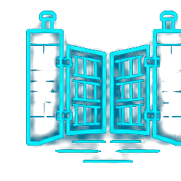
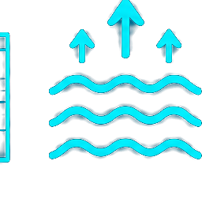
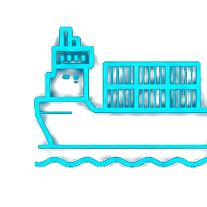
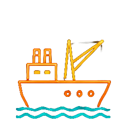
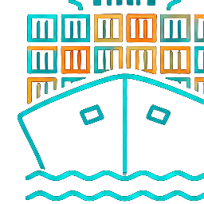
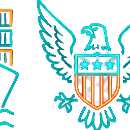
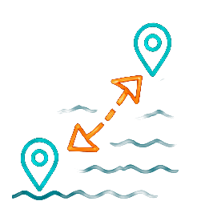

現代功能 · 擴建工程 · 全球影響
2026 年 · 地理與全球化課程
海平面 → 加通湖（海拔 26 公尺）→ 海平面，全程 80 公里



← 拖動滑桿，比較運河開通前後的航行差異
耗資 52.5 億美元 · 歷時 10 年 · 2016 年 6 月 26 日啟用




從 1914 年通航至今，巴拿馬運河仍是人類工程意志與全球化最有力的見證
資料來源：巴拿馬運河管理局 · Wikipedia · Britannica · FreightAmigo · CNBC · Sinay.ai